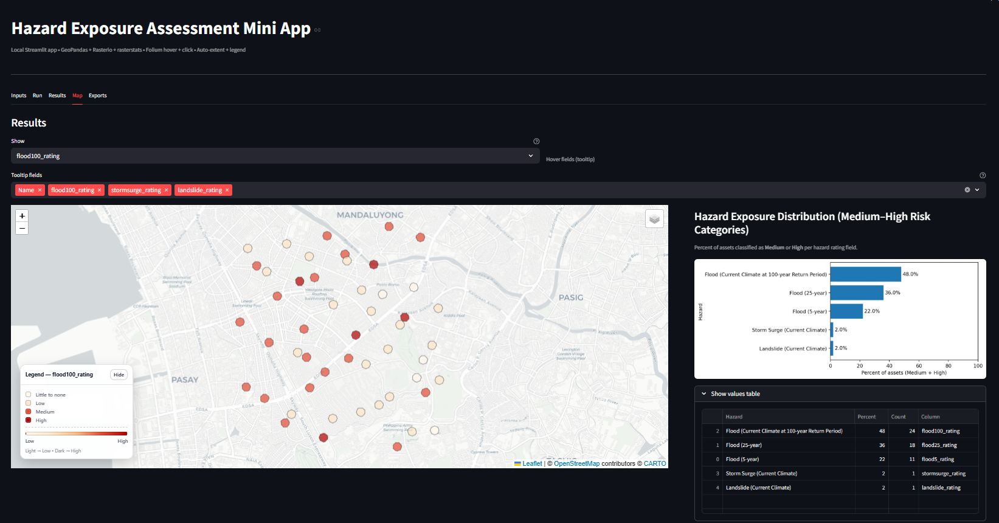
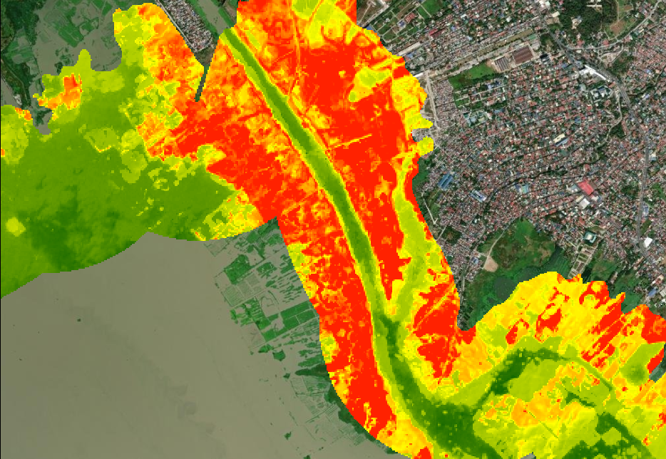
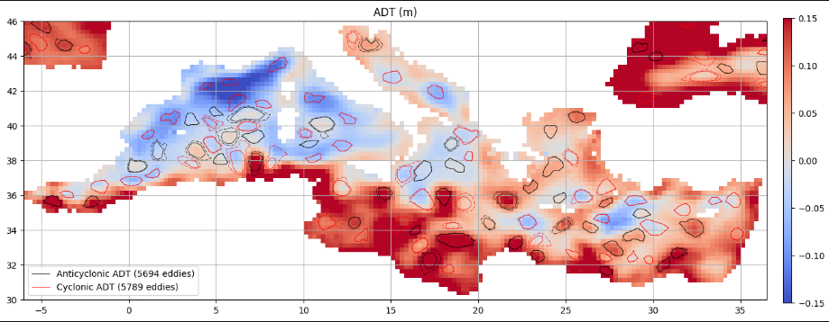

Hazard Exposure Assessment Dashboard
Personal geospatial dashboard to automate exposure metrics and visualization for large, distributed asset portfolios.
Read case study→

Personal geospatial dashboard to automate exposure metrics and visualization for large, distributed asset portfolios.

Standardized framework integrating local and global datasets to assess exposure under current and future scenarios.

Used Google Earth Engine and satellite imagery to map turbidity patterns and identify potential siltation zones.

Hydrodynamic flood simulations producing flood depth and extent maps for hazard interpretation and planning.

Processed multi-year NetCDF datasets in Python to detect mesoscale eddies, extract parameters, and track lifecycle evolution.